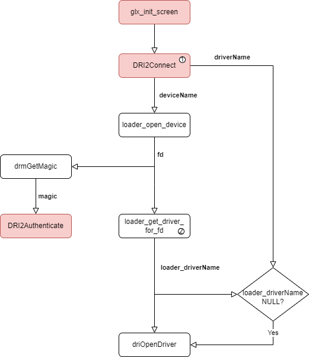
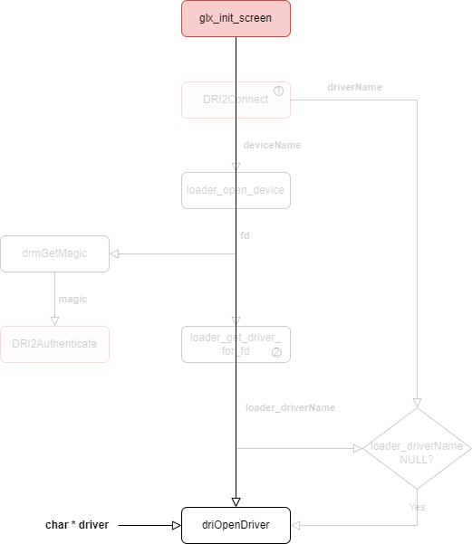
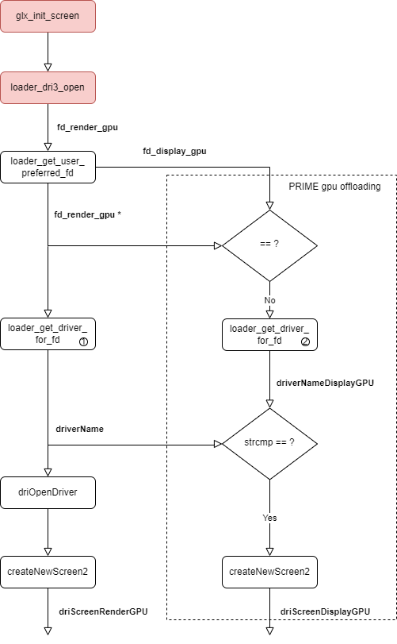

Mesa 的 GLX 实现
Contents
GLX
GLX (Initialism for “OpenGL Extension to the X Window System”) is an extension to the X Window System core protocol providing an interface between OpenGL and the X Window System as well as extensions to OpenGL itself. (From WiKi)
Mesa的 GLX 实现自从 Delete Mesa Classic 已经从原来的 3 种变成现在的 2 种:
- dri
- xlib
flowchart TD
A[xlib or gallium-xlib]
A --> x11
A --> xext
A --> xcb
B[dri]
B --> x11
B --> xext
B --> xfixes
B --> xcb-glx
B --> xcb-shm
如果是xlib, 它的源码位于
- mesa/drivers/x11
如果是gallium-xlib, 它的源码位于
- gallium/winsys/sw/xlib
- gallium/frontends/glx/xlib
- gallium/targets/libgl-xlib
xlib
dri
在 Linux 下 dri-based glx 实现我们只关注 3 个实现：
| 源文件 | 关键函数 |
|---|---|
| dri2_glx.c | dri2CreateScreen() |
| dri3_glx.c | dri3_create_screen() |
| drisw_glx.c | driswCreateScreenDriver() |
dri2CreateScreen

driswCreateScreenDriver

dri3_create_screen
